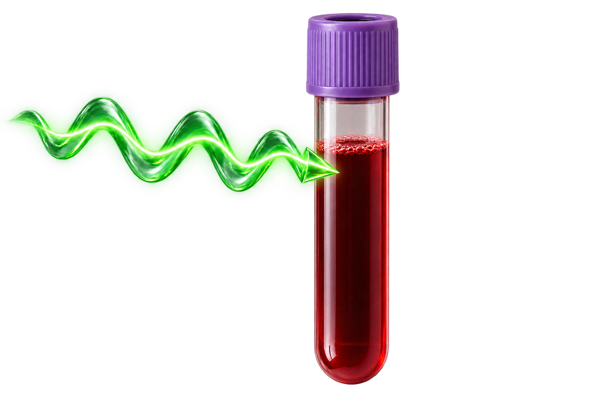
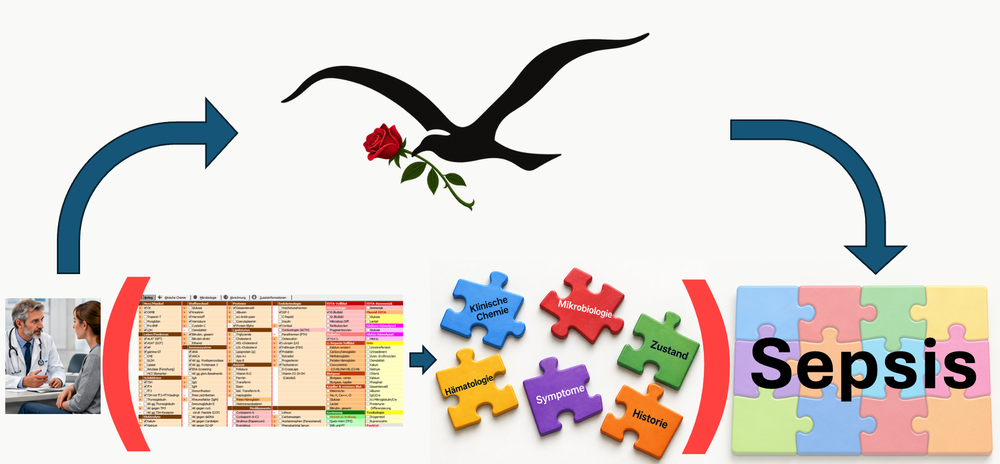
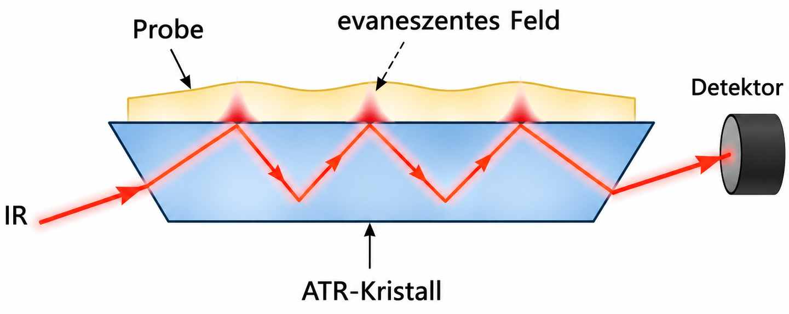
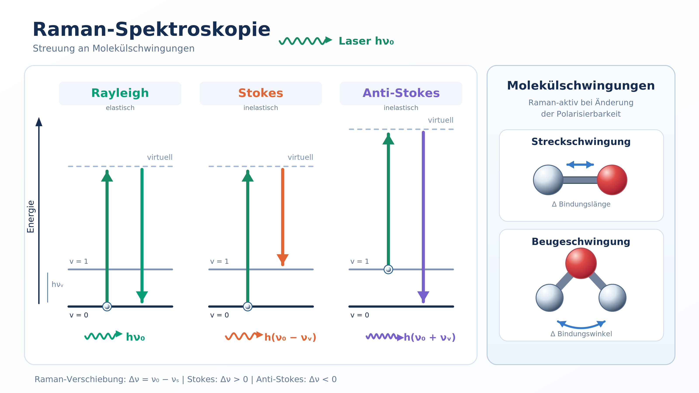
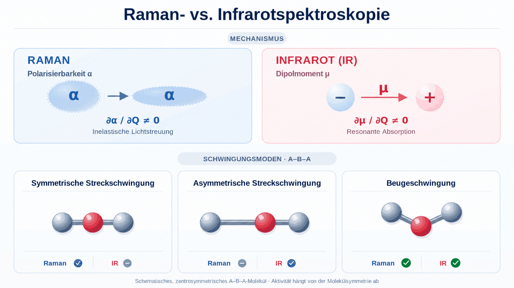
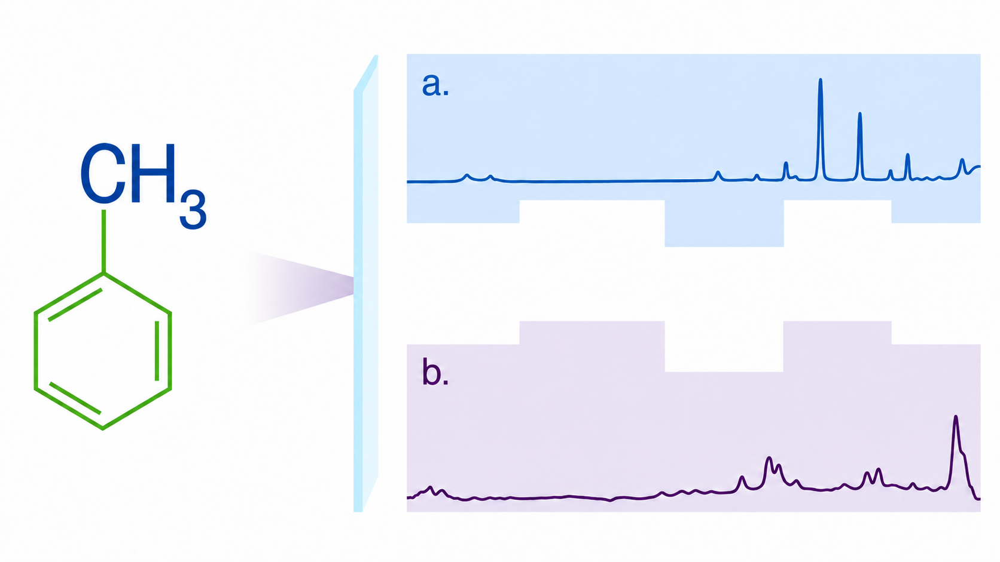
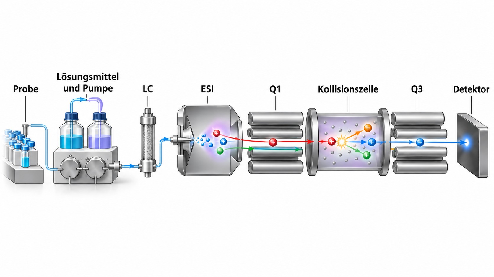
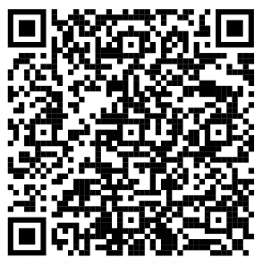
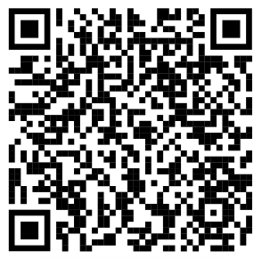

Spektroskopische Diagnostik in der Labormedizin
Prof. Dr. phil. nat. René Staritzbichler
29.10.26

Lernziele
- Spektroskopie als neuartiger Ansatz der Diagnostik kennenlernen
- Spektroskopische Methoden:
- Raman
- Infrarot
- UV/VIS
- Massenspektrometrie
- NMR
- Anwendungen der Ramanspektroskopie
- Personalisierte Laborwerte
- Bildgebung
- Probenverwechslungen
- Probenüberalterung
- Krankheitserkennung
Klassische Labormedizin


Gibt es einen direkteren Nachweis einer Krankheit?

Spektroskopie
- Optische Spektroskopie
- Raman, Infrarot, UV-VIS
- Massenspektrometrie
- Kernspinresonanz
Breitband-Diagnostik:
Biochemie ⇒ Physik
Ein Test, ein Wert ⇒ Gesamte Probe
 ⇒
⇒ 
⇒
Optische Spektroskopie
- Absorptionsspektroskopie
- Infrarot
- UV-VIS
- Inelastische Streuung
- Raman
Sowohl Raman- als auch Infrarot-Spektroskopie beschreiben
molekulare Schwingungen
Absorptions-Spektroskopie

Absorptions-Spektroskopie

ATR - Attenuated Total Reflection (abgeschwächte Totalreflexion)

- IR-Licht wird in einem Kristall mit hohem Brechungsindex mehrfach totalreflektiert.
- An den Reflexionsflächen dringt ein evaneszentes elektromagnetisches Feld in die Probe ein.
- Eindringtiefe: ca. 0,5–3 µm, abhängig von Wellenlänge, Einfallswinkel und Brechungsindizes.
- Absorption durch Molekülschwingungen schwächt das reflektierte IR-Licht wellenzahlabhängig ab.
- Geeignet für Flüssigkeiten, Feststoffe und Gele; meist kaum Probenvorbereitung erforderlich.
- Kurze Eindringtiefe reduziert Probleme durch starke Absorption (z. B. Wasser).
- Wichtig: guter Kontakt zwischen Probe und Kristall.
Inelastische Streuung

Infrared- versus Raman-Spektroskopie

Komplementäre Spektren

- Raman
- Infrarot
Raman- vs. IR-Spektroskopie: Anwendbarkeit
| Aspekt | Raman | IR / FTIR |
|---|---|---|
| Bindungen | Besonders symmetrische, schwach polare Bindungen; z. B. C–C, S–S | Besonders polare Bindungen; z. B. C=O, O–H, C≡N |
| Strukturanalyse | Molekulare Fingerabdrücke, Kristallgitter und Polymorphie | Gut charakterisierter Fingerprint-Bereich; umfangreiche Datenbanken |
| Wässrige Proben | Gut geeignet; relativ geringe Störung durch Wasser | Starke Wasserabsorption; durch ATR teilweise kompensierbar |
| Probenarten | Feststoffe, Flüssigkeiten, Gele, Filme und Kristalle | Besonders geeignet für Flüssigkeiten mit ATR-IR |
| Prozessmessung | Glasfasersonden, Messung durch Fenster; auch bei hohen Drücken/Temperaturen | ATR-Eintauchsonden und Durchflusszellen; gut für Lösungsphasen |
| Signalstärke | Schwache Streusignale; geringe Konzentrationen oft schwierig | Häufig starke Absorption; gut für quantitative Analysen |
| Störfaktoren | Fluoreszenz kann Raman-Signale überlagern; mögliche Lasererwärmung | Keine Fluoreszenzstörung; Wasserabsorption und Signalsättigung möglich |
Massenspektrometrie

- EI: Elektronenionisation
- ESI: Elektronensprayionisation
- MALDI: Laserionisation
- CI: Chemische Ionisation
LC-MS Massenspektrometrie

Massenspektrometrie in der Labormedizin
- Klinische Chemie: Steroidhormone, Vitamine und Metabolite
- Therapeutisches Drug-Monitoring: Medikamentenspiegel zur Dosisanpassung
- Toxikologie: Nachweis von Medikamenten, Drogen und Giftstoffen
- Neugeborenen-Screening: Hinweise auf angeborene Stoffwechselstörungen
- Mikrobiologie: MALDI-TOF-MS zur Identifizierung von Bakterien und Pilzen
NMR
InflamSPEC
Online Folien
Physik
Raman
DAISY


